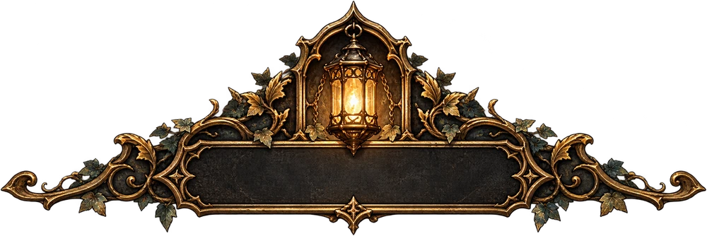
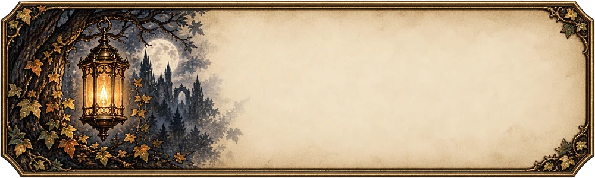
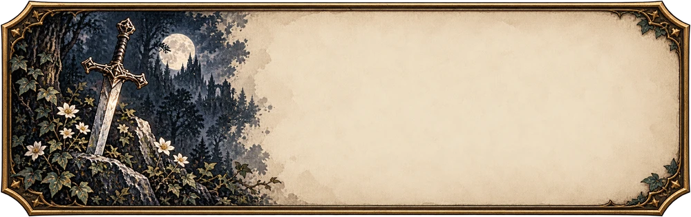
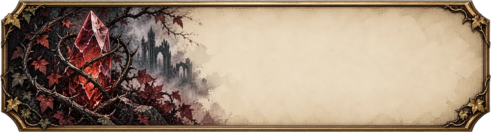
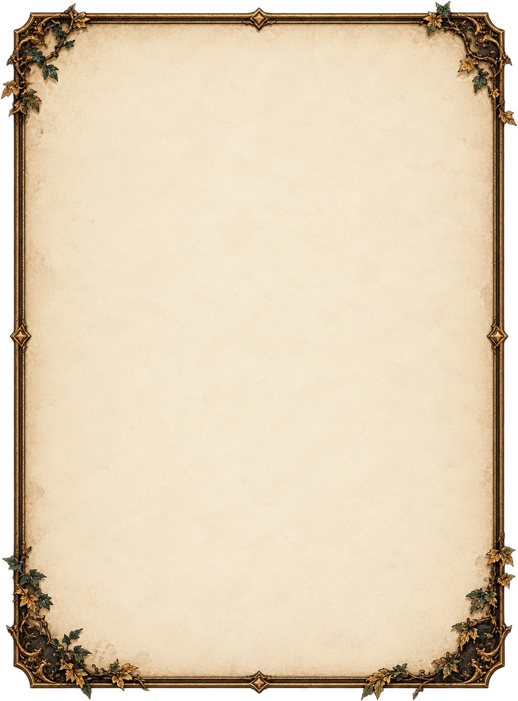
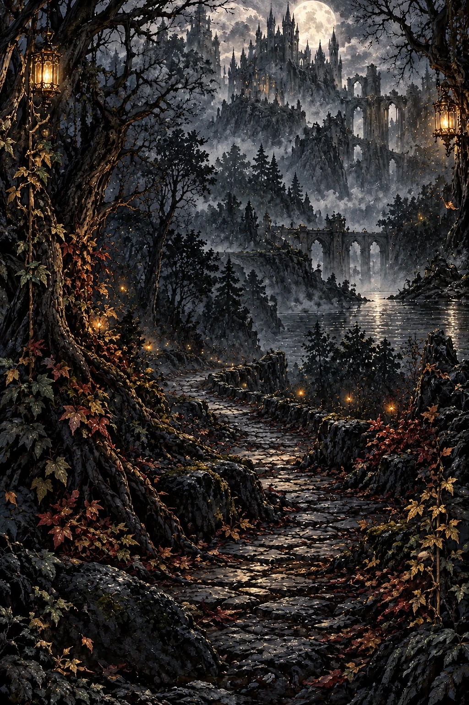

难度选择 · 原稿与游戏实景
已将提灯牌匾、森林城堡背景、藤叶金框和三档完整插画接入实际游戏。选中框、推荐签与按钮状态由界面绘制；难度名称、生命值和回复比例使用真实字体与游戏数据。
实景来自独立浏览器。窄屏与英文长文允许中部滚动，开始与返回按钮固定可见；三档规则保持原值。已验收中英文 10 种布局、6 次实际建局与存档，以及触控、键盘、取消和教学衔接。已于 2026 年 10 月 28 日部署至 GitHub Pages，网页版本为 20261028-ui-fidelity。
查看本轮生产美术素材（6 张）
提灯标题（文字由代码显示）
故事 · 提灯与秋叶
标准 · 长剑与白花
挑战 · 荆棘晶石
藤叶羊皮纸外框
月夜森林城堡外景